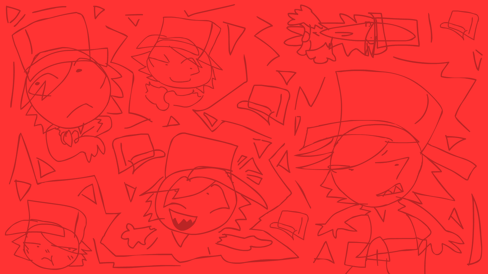

NAME: Jake
AGE: 14
BIRTHDAY: 02.11
DESCRIPTION: He is a bully, but everything he does is a way to cope with his childhood trauma. He has trust issues and tries to push people away because of it.
VOICE ACTOR: JillAstra